Veebirakendusi kasutame me kõik igapäevaselt, seega oskad ilmselt hästi ette kujutada, millised veebirakendused välja näevad.
Selles peatükis vaatame ühte lihtsat näidet, kuidas Pythoni abiga oma veebirakendust luua.
Kasutame veebirakenduse loomiseks Pythoni veebiraamistikku Flask. Teegid pakuvad meile
igasugu klasse ja funktsioone oma rakenduste loomiseks. Raamistikud on aga juba valmis rakendused, mida saab ise oma vajaduste järgi
edasi arendada. Õnneks pole nende paigaldamine keerulisem teekide paigaldamisest ja Thonnys saab Flask'i
paigaldada täpselt samamoodi nagu paigaldasime pygame'i. Ülevalt menüüst Tööriistad,
sealt edasi Halda lisapakette... ja siis tuleb otsinguribale kirjutada Flask,
käivitada otsing ja paigaldada sellenimeline raamistik.
Kuidas veebirakendused töötavad?
Enne veel kui hakkame ise veebirakendust looma, räägime lühidalt, kuidas veebirakendused töötavad. Veebirakendused on programmid, mis
tüüpiliselt töötavad kuskil serveris.
Server on kindlat tüüpi arvuti, mis pakub mingit teenust. Näiteks meiliserver tegeleb e-kirjade saatmisega. Mänguserverid võimaldavad mängida mänge teiste
kasutajatega. Veebiserver tegeleb veebilehtede kättesaadavaks tegemisega.
Serveril on oma kindel IP-aadress ehk internetiaadress, mille järgi saavad teised seadmed tema poole
läbi võrgu pöörduda. IP-aadresseid on
näiteks 192.168.104.183 ja 127.0.0.1. Kuid tüüpiliselt ei pea me mingile veebilehele minemiseks kirjutama
brauseriribale sellist aadressi. Me
kasutame tüüpiliselt midagi loetavamat nagu näiteks https://www.progema.ee/ või
https://www.youtube.com/.
Neid nimetatakse domeeninimedeks ja arvutid kasutavad eraldi domeeninimede süsteemi (DNS) teenust, mis teisendab
sellised inimloetavad nimed IP-aadressiteks. Meie
jaoks on see teisendus tüüpiliselt peidetud ja me näeme vaid domeeninime.
Igal arvutil on ka oma lokaalne IP 127.0.0.1, mille kaudu saame kasutada ka meie arvutis käivaid
veebirakendusi. Sellele vastab ka nimi
localhost. Hiljem, kui oma veebirakenduse käima paneme, siis saame samuti brauserist
selle IP või nimega oma rakendusele ligi.
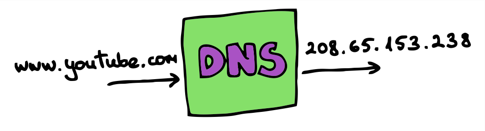
Räägime nüüd ka natuke veebirakenduse enda ülesehitusest. Tüüpiliselt on veebirakendusel kaks poolt. Esimene neist on kasutajapoolne osa ehk see, mida kasutaja oma
brauseris näeb. Seda kutsutakse inglise keeles frontend. Teine osa on serveripool, kus toimub tööloogika ja ka suhtlus andmebaasiga. Seda
poolt kutsutakse inglise keeles backend. Kasutajapoole tööks on kasutajale infot kuvada ja sisendeid küsida, ülejäänud töö toimub
serveripoolel. Kasutajapool suhtleb serveripoolega läbi päringute. Ta saab serveripoolele saata erinevaid päringuid ja serveripool oskab nendele vastavalt käituda
ja kasutajapoolele vastata.
Vahepeal on vaja päringuga serveripoolelt lihtsalt mingit infot saada, vahepeal andmeid salvestada.
Kasutajapoolel kasutatakse peamiselt järgmiseid programmeerimiskeeli: HTML, CSS ja JavaScript. HTML määrab ära, mis elemendid meil
brauseriaknas olema peavad, CSS-iga antakse neile ilus kujundus ja JavaScripti abil määratakse ära veebilehe käitumine. Sellise lihtsa rakenduse puhul, nagu meil,
polegi tihtipeale JavaScripti vaja. HTML-ist ja CSS-ist räägime hiljem täpsemalt.
Pythonit kasutame serveripoolse programmeerimiskeelena.
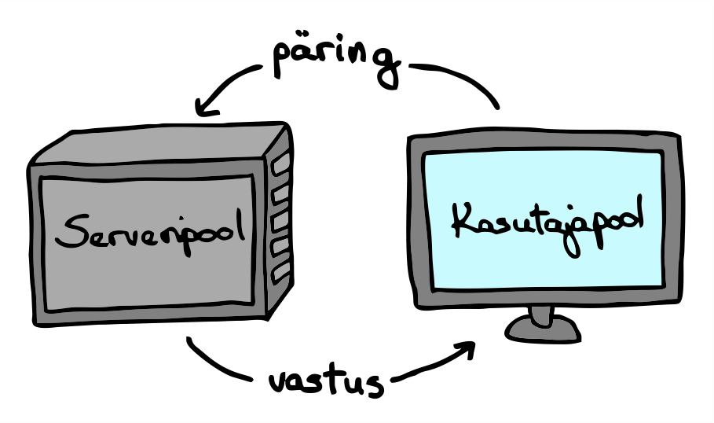
Tavaliselt suhtlevad veebirakendused HTTP-meetodite kaudu. Nende meetodite abil suhtleb kasutajapool serveripoolega ja ka
erinevad veebirakendused omavahel. Põhilised neli HTTP-meetodit, mida kasutatakse on järgmised:
GET - andmete ja info küsimiseks.
POST - uue kirje loomiseks.
PUT - olemasoleva kirje muutmiseks.
DELETE - kirje kustutamiseks.
Meie veebirakendus hakkab kasutama neist esimest kaht.
Kuidas luua veebirakendust?
Selles peatükis loome lihtsa kodutööde haldamise veebirakenduse. Kui veebirakendus käivitada, siis algselt ühtegi kodutööd ei ole, kuid
läbi rakenduse saame neid endale lisada. Veebirakendus kuvab meile ootel kodutööde nimekirja ja saame sealt tehtud kodutööd ka eemaldada.
Alustame kõige lihtsamast Flask'i rakenduse näitest.
Kõigepealt on meil vaja Flask importida. Seejärel saame luua uue
veebirakenduse.
Konstruktorile peame andma argumendi __name__. See on eriline muutuja, mis annab
Flask'ile
vajalikku infot selle kohta, kuidas rakendus käivitati.
Määrame ära meie rakenduses olevad aadressid. Lihtsalt üksik kaldkriips tähistab avalehte ehk aadressi, millel pole oma
konkreetset nime. See aadress määratakse ära funktsiooni kohal oleva annotatsiooniga, mis algab @-sümboliga. Funktsioonis tagastatakse selle lehekülje sisu.
Hetkel me tagastame lihtsalt sõne, mis tuleks veebibrauseris kuvada.
Proovi see rakendus käivitada. Konsooli peaks ilmuma midagi sellist:
Oma veebirakendusele saame ligi aadressil http://127.0.0.1:5000 või
http://localhost:5000. 127.0.0.1 on meie lokaalne IP ja sellele viitab ka nimi localhost.
Kooloniga järgneb arv 5000, mis tähistab arvuti porti, kus meie rakendus käib. Vaikimisi tehakse lehele minnes GET-päring. Kõik tehtud päringud
ilmuvad ka Thonny konsooli, kus on näha, mis ajal milline päring tehti.
Kui soovid rakendust peatada, siis pead seda tegema Thonnys STOP-nupule vajutades, muidu jääbki rakendus tööle.
Mis on HTML?
Veebirakendustes kasutatakse ekraanile kuvatavate elementide määramiseks keelt nimega HTML. See tuleb ingliskeelsest nimest
HyperText Markup Language. Kui me tahame oma rakenduses midagi vähegi keerulisemat kuvada, siis peaksime samuti
HTML-i kasutama hakkama. Vaatame ühte lihtsat HTML-i näidet.
Siin esimene rida ütleb ära, et meil on tegemist HTML dokumendiga. Ülejäänud sisu on html-märgendite vahel.
Kogu HTML-i keel koosnebki märgendite abil loodud elementidest. Igal elemendil on algusmärgend ja lõpumärgend. Algusmärgend on noolsulgude vahel ja
lõpumärgendil on alguses lisaks noolsulule ka kaldkriips. Nende abil määratakse ära, kus element algab ja lõppeb.
Märgend head tähistab HTML-faili päist. Seal saab ära määrata,
mis kodeeringus meie fail on,
importida teisi vajalikke faile ja määrata ka lehekülje nime. Märgendi title vahele
läheb lehekülje nimi, mida
kuvatakse ka brauseris vahelehe kaardil.
Sellele järgneb märgend body, kus on kõik need elemendid, mida
brauseris kuvatakse. Näiteks
h1-märgend tähistab kõige suuremat pealkirja.
Siin on ära toodud mõned kasulikud HTML-i märgendid, mida hakkame oma veebilehel kasutama. Neid märgendeid on tegelikult veel omajagu,
aga praegu meile nendest piisab. Kogu nimekiri koos ingliskeelsete selgitustega on leitav näiteks leheküljelt
https://www.w3schools.com/TAGS/default.asp.
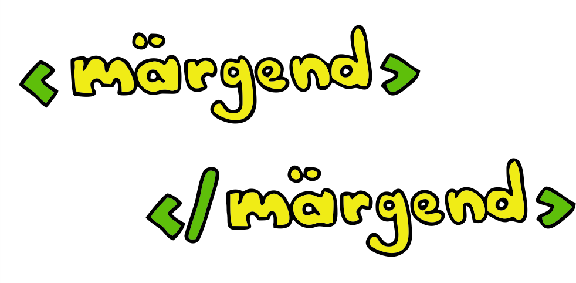
Märgendi nimi
Seletus
h1, h2, h3, h4, h5, h6
Pealkirjad erinevas suuruses, h1 on kõige suurem ja h6 kõige väiksem
a
Link
div
Dokumendi osa, kasutatakse põhiliselt teiste elementide paigutuse määramiseks
form
Vorm kasutajalt sisendi küsimiseks
button
Nupp
img
Pilt
input
Element kasutajalt sisendi küsimiseks
span
Dokumendi või teksti osa, kasutatakse näiteks lühikese teksti kirjutamiseks või tekstis teatud osale teise
stiili määramiseks
Proovime panna oma rakenduse avalehe hoopis meie kirjutatud HTML-i tagastama. Selleks impordime funktsiooni render_template,
millele saab ette anda HTML-faili nime ja mis tagastab selle faili sisu. Selleks, et see funktsioon leiaks meie HTML-faili üles, peab meie HTML-fail asuma
kaustas nimega templates. See kaust peab olema samas kaustas nagu meie Pythoni koodifail. Tekitame sellise kausta ja
loome sinna faili nimega avaleht.html. Faili saad luua ka Thonnyga, kuid salvestades tuleb jälgida, et faili lõppu ei lisataks
.py-laiendit. Kopeerime sellesse faili ülaltoodud lihtsa HTML-faili näite.
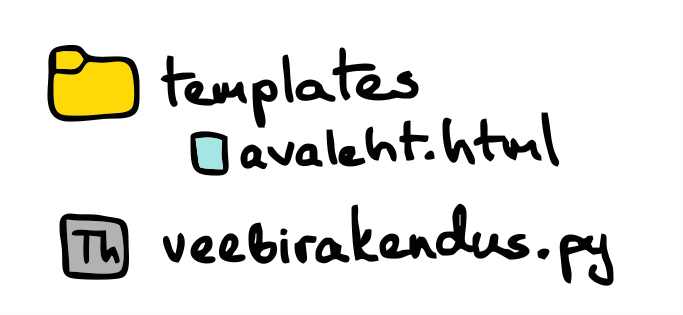
Nüüd tagastame oma veebirakenduses sõne asemel funktsiooni render_template
tagastusväärtuse.
Jinja mallid
Flask kasutab Jinja malle, mis võimaldavad meil HTML-faili sees kasutada muutujaid ja kirjutada tingimus- ja korduslauseid. Me
soovime oma Pythoni programmis luua järjendi, kus hakkame ootel kodutöid hoidma. Veebirakenduse avalehel sooviksime neid kuvada. Flask
laseb meil selle järjendi HTML-i kaasa anda ja tänu Jinja malli võimalustele saame seal tsüklis seda järjendit läbi käia ja iga järjendi elemendi jaoks jupi
HTML-i luua. Jinja malli osad kirjutatakse loogeliste sulgude ja protsendimärkide vahele.
Erinevalt Pythonist pole siin taanded tegelikult üldse olulised, neid kasutatakse ainult loetavuse huvides. Iga
HTML-elemendi lõpetab lõpumärgend ja Jinja malli for-tsükli lõpetab {{'{'}}% endfor %{{'}'}}.
Kui soovime lihtsalt muutuja väärtust kuvada, siis paneme muutuja nime kahekordsete loogeliste sulgude vahele.
Põhiprogrammis loome testimiseks mõne elemendiga ootel kodutööde järjendi ja anname selle funktsioonile
render_template argumendiks kaasa. Me peame seal täpsustama, millise nimega argumendile soovime selle väärtuse omistada,
seega peame kirjutama kõigepealt selle muutuja nime, mida oma Jinja mallis kasutasime ja siis omistama sellele väärtuse meie põhiprogrammist.
Rakendust taaskäivitades peaks nüüd kodutööd ka üksteise järel eraldi ridadele tekkima.
Kui ikkagi jätame oma kodutööde järjendi programmi alguses tühjaks, siis kuvab meie rakendus ikka "Siin on sinu ootel kodutööd:". Selle asemel
võiks sellisel juhul kuvada hoopis "Ootel kodutöid ei ole". Õnneks saame seda Jinja malli abil korraldada. Sarnaselt tsüklile, saab seal kirja panna ka
tingimuslauseid. Järjendi pikkuse leidmine käib Jinja mallis natuke teisiti kui Pythonis. Selle saab leida nii: kodutööd | length.
Uue kodutöö lisamine
Proovime nüüd hakata lisama oma rakendusele tööloogikat. Alustame uue kodutöö lisamisest. Loome selleks eraldi lehekülje, kus oleks
tekstikast, kuhu kasutaja saab uue kodutöö kirja panna ja nupp, millega see salvestada. Proovime kõigepealt luua oma uue lehekülje jaoks HTML-i
faili nimega lisamine.html. See peaks minema samuti kausta nimega templates.
Siin kasutame form-märgendit, mis tekitab meile vormi kasutajalt sisendi küsimiseks. Määrame vormile
meetodiks post, sest tahame vormi esitades POST-päringuga need andmed oma serveripoolele saata. Meil on vaja kasutajalt
küsida vaid uue kodutöö kirjeldust, selleks kasutame input-märgendit. Selle sisendi tüübiks paneme text,
sest tahame, et kasutaja meile teksti sisestaks. Lisaks määrame sisendile ka ID ja nime. Nime järgi saame hiljem Pythoni poolel sisestatud väärtuse kätte. Kui
sooviksime rohkem andmeid küsida, siis saaksime veel teisi input-märgendeid lisada ja anda neile lihtsalt erinevaid ID-d ja nimed.
Viimane element meie vormis on nupp, mis vajutamisel meie vormi esitab ehk teeb POST-päringu sisestatud andmetega.
Oma veebirakendusse lisame nüüd uue lehekülje. Paneme selle nimeks näiteks "/lisamine". Kui kasutaja sellele aadressile läheb,
siis peaks meie rakendus kuvama lisamine.html sisu.
Kui nüüd brauseris lähed aadressile http://127.0.0.1:5000/lisamine,
siis peaks sulle avanema meie uus vorm. Kuid kui proovid vajutada nuppu "Lisa", siis saad veateate, mis ütleb
Method Not Allowed ehk selline meetod pole lubatud. Me oleme oma veebirakenduse seadistanud lubama
ainult GET-päringuid sellel aadressil, nüüd tahame lisada ka POST-päringud.
Veebirakenduses saame uut aadressi lisades määrata ära, mis tüüpi päringud on sellele aadressile lubatud. Vaikimisi on lubatud ainult
GET-päringud. Nüüd lisame oma "/lisamine" aadressile ka POST-päringu võimaluse. Funktsiooni sees peame siis lisama kontrolli, mis vaataks, mis tüüpi
päring tehti. GET-päringu puhul tagastame jätkuvalt lihtsalt vastava HTML-i, aga POST-päringu puhul tahame nüüd uue kodutöö järjendisse lisada ja seejärel
võiksime kasutaja tagasi avalehele suunata.
Kõigepealt peame lisama mõned vajalikud impordid:
Seejärel täiendame oma lisamise funktsiooni:
Kõigepealt anname aadressile teada, mis sorti meetodid seal lubatud on.
Seejärel peame funkstiooni sisus kontrollima, mis sorti päring tehti. Selle info saame kätte request-objektist.
Väljal method on kirjas kasutatud meetodi nimi. Kui tegemist oli POST-meetodiga, siis saame
request-objekti küljest kätte ka oma vormi (väljal form). See vorm on sõnastik, kus
võtmed on HTML-is input-märgenditele antud nimed. Sealt saadud kodutöö kirjelduse lisame ootel kodutööde järjendisse.
Lõpuks, kui tegemist oli POST-päringuga, siis tahame suunata kasutaja tagasi avalehele. Selleks kasutame funktsiooni
redirect, millele argumendiks anname funktsiooni url_for tagastusväärtuse.
Funktsioon url_for paneb meile soovitud lehekülje jaoks kokku täispika aadressi, mida saab kasutaja suunamiseks kasutada.
Proovi nüüd rakendus taaskäivitada ja uuesti kodutööd lisada. Seekord peaks lisamine toimima ja avalehel peaks uus lisatud
kodutöö ka nähtavale ilmuma.
Lisame veel natuke lehekülgede vahel liikumist. Esiteks tahaks me nüüd oma avalehele lisada lingi, mille abil saab liikuda uue kodutöö lisamise lehele.
Teiseks võiks lisamise lehel olla võimalus ka tagasi avalehele minna, juhul kui kasutaja mõtleb ümber ja ikkagi ei soovi uut kodutööd lisada.
Täiendame kõigepealt oma avaleht.html faili ja lisame sinna for-tsükli järele
ühe lingi. Lingil on omadus nimega href, kus saab ära määrata, millisele aadressile link peaks viima. Siin saame
samuti kasutada funktsiooni url_for, kui lisame ta kahekordsete loogeliste sulgude vahele. Paneme lingi ka
div-märgendite vahele, et meil oleks hiljem lihtsam veebilehele kujundust lisada.
Brauseris suunatakse meid nüüd sellel lingil vajutades lisamise lehele. Samasuguse loogikaga saame ka lisamise lehele panna "Tagasi" lingi,
mis suunaks meid avalehele.
Sellega on meil valmis kogu loogika uue kodutöö lisamiseks. Järgmiseks vaatame olemasoleva kodutöö
kustutamist.
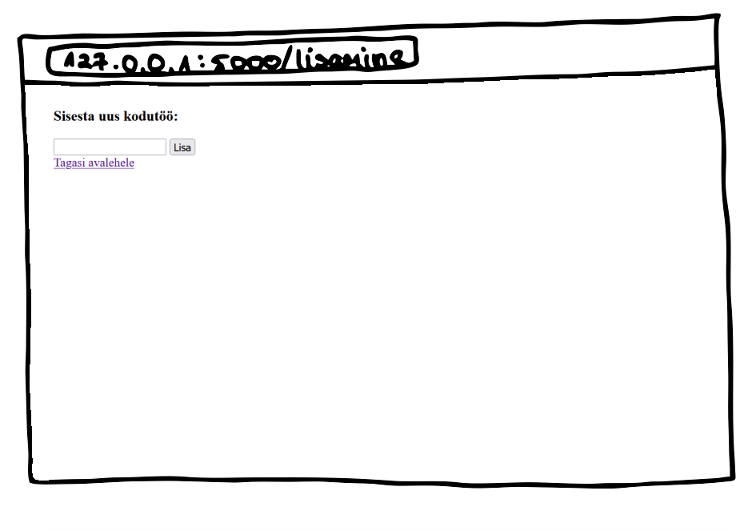
Olemasoleva kodutöö kustutamine
Kustutamiseks pole meil otseselt eraldi lehekülge vaja, piisaks sellest, kui iga kodutöö juures oleks eemaldamise nupp. Kõige lihtsam variant on
jälle kasutada ära form-elementi, milles on üks input-element eemaldatava väärtusega.
Me tahame selle input-elemendi kasutaja eest ära peita ja ise sinna kodutöö kirjelduse automaatselt väärtuseks panna. Õnneks saame
kõike seda lihtsasti teha. Saame määrata input-elemendi tüübiks "hidden", mis tähendabki peidetud välja, ja väärtuse saame läbi omaduse value ette anda.
Kugi HTTP-meetoditest sobiks kustutamiseks kõige paremini DELETE, siis peame siin ikkagi POST-meetodit kasutama, sest HTML ei luba kasutada
PUT- ja DELETE-meetode.
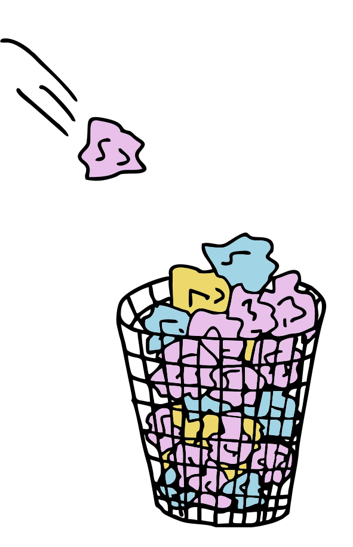
Veebirakenduses lisame avalehe lubatud meetodite hulka ka POST-meetodi, mille korral eemaldame etteantud kodutöö ootel kodutööde järjendist.
Nüüd peaks iga kodutöö all olema ka eemaldamise nupp, millele vajutades vastav kodutöö järjendist eemaldatakse. Sellega on kogu
meie veebirakenduse loogika olemas, aga kindlasti nõustud, et see rakendus ei näe just kõige ilusam välja. Järgmiseks vaatamegi, kuidas neid elemente kujundada.
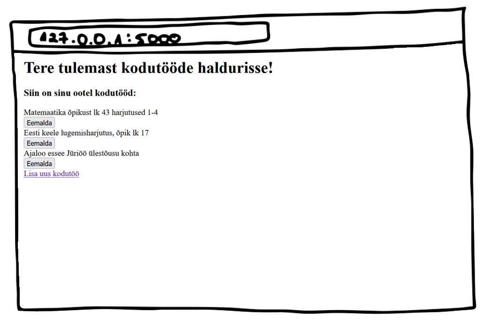
CSS ehk kuidas asjad ilusaks teha
Tavalised HTML-elemendid näevad üsna igavad välja. Nende kujundamiseks kasutatakse omaette keelt nimega CSS. HTML-elemendile kujunduse lisamiseks on kaks
varianti. Esiteks on HTML-elementidel omadus style, kuhu saab sõnena CSS-i stiilielemente ette anda. Näiteks on CSS-is olemas
omadus color teksti värvi määramiseks. Kui tahaksime pealkirjale näiteks sinaka värvi anda, siis võiksime seda teha nii:
#0f436e on värvi HEX-kood. Üks lihtne viis omale meelepärane värv leida on
Google'i värvivalija abil. See näitab kohe ära iga värvi HEX-koodi.
Teine (ja tihtipeale eelistatum) variant on luua eraldi CSS-fail, mis hoiab endas rakenduse stiile. CSS failis saab
luua erinevaid stiiliklasse, need võivad olla üldised, mis muudavad näiteks kogu rakenduse h1-elementide stiili,
või siis võime neile anda konkreetse klassinime ja muuta ainult nende elementide stiili, millele selle CSS-klassi külge paneme. See lubab meil sama stiili
mitu korda kasutada ja hoiab meie koodi puhtamana.
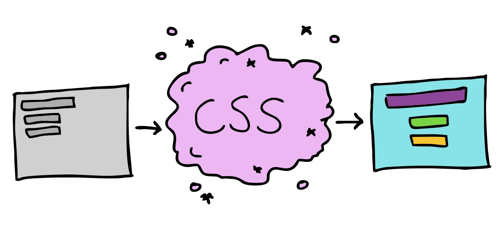
CSS-iga määratavaid omadusi on väga palju, siin on välja toodud vaid need, mida oma rakenduses hakkame kasutama. Kellel on huvi, saab neid uurida näiteks
ingliskeelselt lehelt https://www.w3schools.com/cssref/index.php.
Polster, määrab ära palju tühja ruumi elemendi sisse äärtesse jätta. Võib määrata kohe kõikidele külgedele või
siis ka ükshaaval (üles, alla, vasakule, paremale)
border
Piirjoon
border-radius
Piirjoone raadius ehk kui ümaraid piirjoone nurki tahame
text-align
Tekstijoondus, näiteks vasakule, keskele või paremale
Ääris, määrab ära kui palju tühja ruumi tahame elemendist väljapoole äärtesse jätta
outline
Välisjoon
justify-content
Alamelementide paigutus
display
Kuva, määrab ära kuidas elementi kuvada tuleb
Loome me endale samuti CSS-faili. Flask nõuab, et CSS-failid oleksid kaustas nimega
static, seega loome oma projektikausta sellenimelise uue kausta ja lisame sinna faili kujundus.css, selle faili loomiseks võib samuti Thonnyt kasutada. Kopeerime faili järgmise sisu:
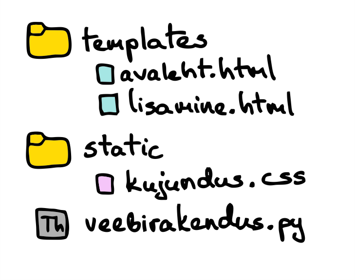
Faili alguses oleme lisanud stiile elemendi tüübi järgi, aga allpool on ka mõned meie loodud klassid. Erinevalt
konkreetsetele HTML-elementidele mõeldud stiilidest algavad CSS-klassid punktiga. Nende nimed on ka meie enda valitud. Siin on meil neli
enda kirjutatud stiiliklassi: kodutöö-rida, kodutöö-kirjeldus,
kodutöö-kustutamine ja link. Need nimed juba vihjavad sellele, kus me neid kasutada tahame.
Erinevalt konkreetsele HTML-elemendile mõeldud stiilist, ei rakendu need meie loodud stiiliklassid automaatselt. Me peame oma HTML-failis
elementidele need käsitsi külge panema. Selleks on kõigil HTML-märgenditel omadus class. Sellele omadusele
saab tühikutega eraldatult anda ette kõik stiiliklasside nimed, mis sellele elemendile peavad rakenduma.
Lisaks sellele peame oma HTML-failis ka viitama CSS-failile, mida soovime kasutada. Seda tuleb teha head-märgendite
vahel.
Meie avaleht.html näeb koos stiilidega välja selline:
Ja lisamine.html selline:
Proovi kõik need failid salvestada ja rakendus taaskäivitada. Nüüd peaks meie veebirakendus juba palju ilusam olema.
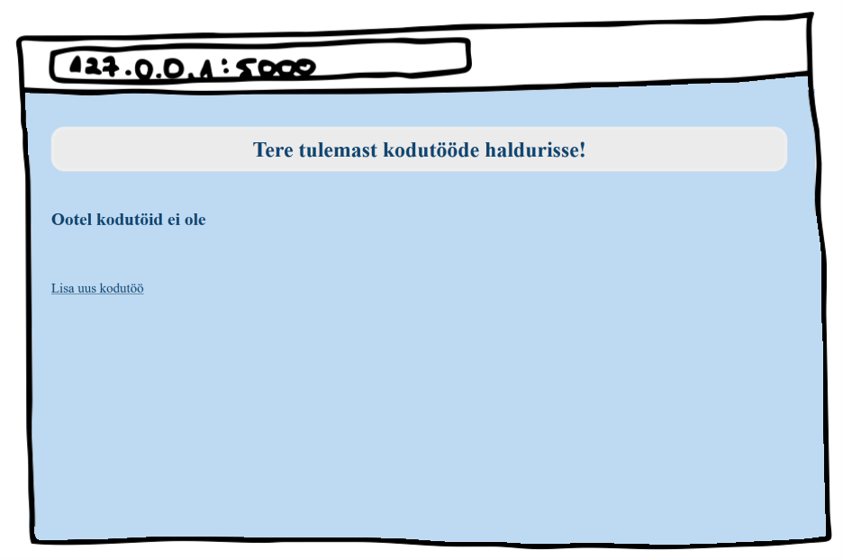
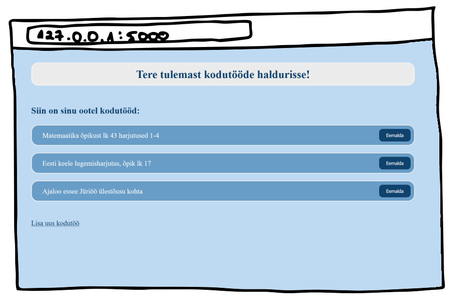
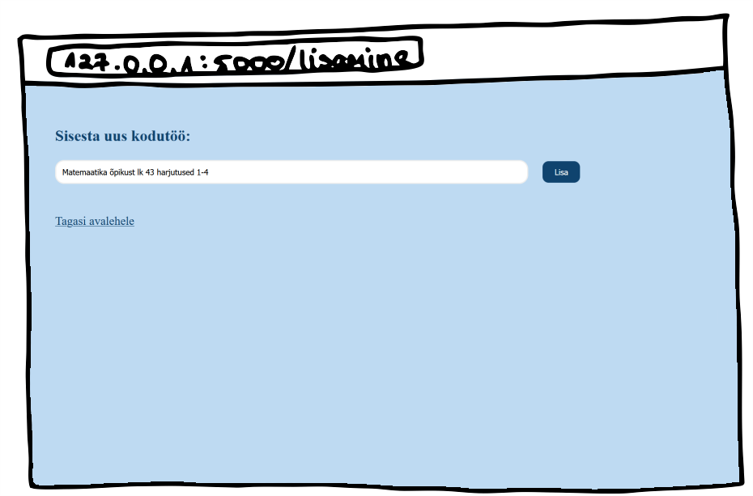
Viimase väikse lihvina võime oma veebirakendusele ka ikooni määrata, mida kuvatakse brauseris vahelehel enne veebirakenduse pealkirja.
Selleks lisame ikooni pildi oma static kausta. Ikooni faili võid alla laadida
siit. Seejärel peame mõlemasse HTML-faili selle samuti lisama. See läheb
samuti head-märgendite vahele, näiteks kohe pärast meie CSS-faili.
Võid proovida seda rakendust veel endale meelepärasemaks kujundada. Ja miks ka mitte proovida luua
täiesti uut veebirakendust mõnel teisel teemal. Selles peatükis loodud veebirakenduse lõpliku koodi saad alla laadida
siit.